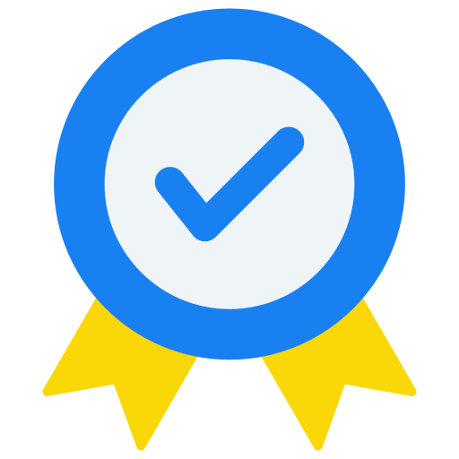

Friendly
Friendly, this is a characteristic of IDN students and all IDN residents are required to have this friendly trait. This characteristic is also used in each individual IDN student.

Accountable
This trait is also necessary for every individual, because if we are reliable, many people will come to us.

Trustworthy
Trust is also needed by IDN students, because all of them will definitely feel leadership and one of the characteristics of one's leadership is to be trusted.